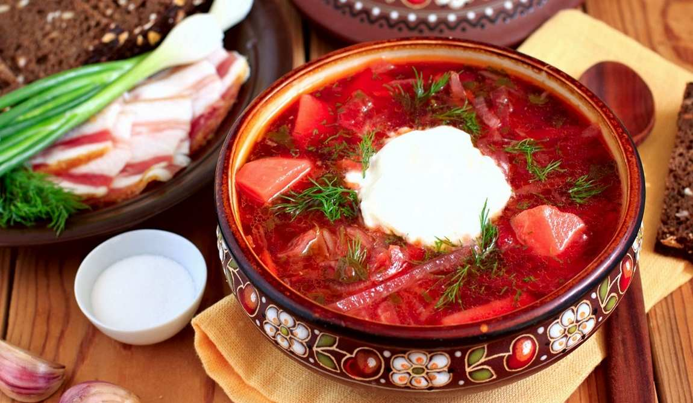

×

Ukraine
____
Традиционная еда
Борщ — свекольный суп на мясном бульоне. В Украине красный борщ готовят по-разному: в одних областях в кастрюлю обязательно кладут фасоль, в других – чернослив, в третьих – грибы, в четвертых борщ заправляют мукой, а в пятых – копченостями.

Вареники, или пироги — одно из самых известных национальных блюд Украины.
Сало — главная национальная еда в Украине. Свиное сало солят, варят, коптят, вытапливают из него смалец, делают шкварки, перетирают с чесноком.
Галушки — отваренные в воде кусочки пресного теста. Их едят как самостоятельное блюдо, заправив сливочным маслом или сметаной, а иногда добавляют в суп. Реже галушки делают с мясной, творожной или ягодной начинкой.

____